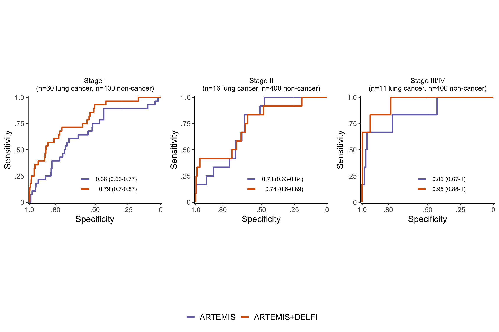

Last updated: 2024-02-06
Checks: 6 1
Knit directory: artemis2024/
This reproducible R Markdown analysis was created with workflowr (version 1.6.2). The Checks tab describes the reproducibility checks that were applied when the results were created. The Past versions tab lists the development history.
The R Markdown file has unstaged changes. To know which version of
the R Markdown file created these results, you’ll want to first commit
it to the Git repo. If you’re still working on the analysis, you can
ignore this warning. When you’re finished, you can run
wflow_publish to commit the R Markdown file and build the
HTML.
Great job! The global environment was empty. Objects defined in the global environment can affect the analysis in your R Markdown file in unknown ways. For reproduciblity it’s best to always run the code in an empty environment.
The command set.seed(20231222) was run prior to running
the code in the R Markdown file. Setting a seed ensures that any results
that rely on randomness, e.g. subsampling or permutations, are
reproducible.
Great job! Recording the operating system, R version, and package versions is critical for reproducibility.
Nice! There were no cached chunks for this analysis, so you can be confident that you successfully produced the results during this run.
Great job! Using relative paths to the files within your workflowr project makes it easier to run your code on other machines.
Great! You are using Git for version control. Tracking code development and connecting the code version to the results is critical for reproducibility.
The results in this page were generated with repository version 20ed939. See the Past versions tab to see a history of the changes made to the R Markdown and HTML files.
Note that you need to be careful to ensure that all relevant files for
the analysis have been committed to Git prior to generating the results
(you can use wflow_publish or
wflow_git_commit). workflowr only checks the R Markdown
file, but you know if there are other scripts or data files that it
depends on. Below is the status of the Git repository when the results
were generated:
Ignored files:
Ignored: .DS_Store
Ignored: analysis/.Rhistory
Ignored: code/.DS_Store
Ignored: code/.Rhistory
Ignored: code/ARTEMIS_Pipeline/.DS_Store
Ignored: code/ARTEMIS_Pipeline/01_generate_artemis/.DS_Store
Ignored: code/ARTEMIS_Pipeline/04_artemis_pipeline/.DS_Store
Ignored: code/ARTEMIS_Pipeline/04_artemis_pipeline/counts/
Ignored: code/ARTEMIS_Pipeline/04_artemis_pipeline/read_counts/
Ignored: code/cfDNA_Models/.DS_Store
Ignored: code/cfDNA_Models/Liver_Detection/.DS_Store
Ignored: code/cfDNA_Models/Liver_Detection/Cohorts/.DS_Store
Ignored: code/cfDNA_Models/Liver_Detection/Control/.DS_Store
Ignored: code/cfDNA_Models/Lung_Detection/.DS_Store
Ignored: code/cfDNA_Models/Lung_Detection/Control/.DS_Store
Ignored: code/cfDNA_Models/Multi_Cancer_Detection/.DS_Store
Ignored: code/cfDNA_Models/Multi_Cancer_Detection/Control/.DS_Store
Ignored: code/cfDNA_Models/Multi_Cancer_TissueOfOrigin/.DS_Store
Ignored: code/cfDNA_Models/Multi_Cancer_TissueOfOrigin/Control/.DS_Store
Ignored: code/rlucas/.DS_Store
Ignored: code/rlucas/data/.DS_Store
Ignored: code/useful.stuff.aa/.DS_Store
Ignored: code/useful.stuff.aa/R/.DS_Store
Ignored: code/useful.stuff.aa/data/.DS_Store
Ignored: code/useful.stuff.aa/raw-data/
Ignored: data/.DS_Store
Ignored: data/CN_Analysis/.DS_Store
Ignored: data/Cristiano_Detection/.DS_Store
Ignored: data/Cristiano_TOO/.DS_Store
Ignored: data/Downsamples/.DS_Store
Ignored: data/Epi/.DS_Store
Ignored: data/Final_LUCAS_Ensemble/.DS_Store
Ignored: data/Final_LUCAS_Ensemble/Locked_Models/.DS_Store
Ignored: data/Final_Liver_Risk_Ensemble/.DS_Store
Ignored: data/Final_Liver_Risk_Ensemble/Results/.DS_Store
Ignored: data/GSEA/.DS_Store
Ignored: data/GSEA/KEGG_DensityKmers.GseaPreranked.1699237807444/.DS_Store
Ignored: data/GSEA/KEGG_TotalKmers.GseaPreranked.1699237843817/.DS_Store
Ignored: data/Get_Numbers/.DS_Store
Ignored: data/Kmer_Distributions/.DS_Store
Ignored: data/LINE1/.DS_Store
Ignored: data/LINE1/Downloads/.DS_Store
Ignored: data/LUCAS_Stability_Analysis/.DS_Store
Ignored: data/Mathios_Published/.DS_Store
Ignored: data/NoveltyTables/.DS_Store
Ignored: data/PCAWG/.DS_Store
Ignored: data/TCGA/.DS_Store
Ignored: data/focal_pcawg/.DS_Store
Ignored: output/
Unstaged changes:
Modified: analysis/Fig4_Epi.Rmd
Modified: analysis/Fig5_LUCAS.Rmd
Modified: analysis/figS22_liver.Rmd
Modified: analysis/figS23_24_lungval.Rmd
Note that any generated files, e.g. HTML, png, CSS, etc., are not included in this status report because it is ok for generated content to have uncommitted changes.
These are the previous versions of the repository in which changes were
made to the R Markdown (analysis/figS23_24_lungval.Rmd) and
HTML (docs/figS23_24_lungval.html) files. If you’ve
configured a remote Git repository (see ?wflow_git_remote),
click on the hyperlinks in the table below to view the files as they
were in that past version.
| File | Version | Author | Date | Message |
|---|---|---|---|---|
| Rmd | 72def7c | shay-279 | 2023-12-22 | all code |
| html | 72def7c | shay-279 | 2023-12-22 | all code |
library(here)here() starts at /Users/akshayaannapragada/Dropbox/ScannedNotes/VelculescuLab/Cancer Genomics Lab/plasma_repeats/artemis2024library(data.table)
library(tidyverse)── Attaching packages ─────────────────────────────────────── tidyverse 1.3.1 ──✔ ggplot2 3.3.5 ✔ purrr 0.3.4
✔ tibble 3.1.6 ✔ dplyr 1.0.8
✔ tidyr 1.2.0 ✔ stringr 1.4.0
✔ readr 2.0.1 ✔ forcats 0.5.1── Conflicts ────────────────────────────────────────── tidyverse_conflicts() ──
✖ dplyr::between() masks data.table::between()
✖ dplyr::filter() masks stats::filter()
✖ dplyr::first() masks data.table::first()
✖ dplyr::lag() masks stats::lag()
✖ dplyr::last() masks data.table::last()
✖ purrr::transpose() masks data.table::transpose()library(devtools)Loading required package: usethislibrary(ggplot2)
library(ggpubr)
library(cowplot)
Attaching package: 'cowplot'The following object is masked from 'package:ggpubr':
get_legendlibrary(RColorBrewer)
library(readxl)load_all(here("code","useful.stuff.aa")) # Loadℹ Loading useful.stuff.aaload_all(here("code","rlucas")) # Loadℹ Loading rlucasmodel_names<-c("ARTEMIS_Ensemble","ARTEMIS_single_DELFI_SSLs_Ensemble")
#model_names<-c("ARTEMIS_Ensemble","Mathios_DELFI","ARTEMIS_single_DELFI_SSLs_Ensemble")
#colors<-c("#66c2a5","#8da0cb","#fc8d62")
#colors<-c("#1b9e77","#d95f02")
colors<-c("#7570B3","#d95f02")
meta<-fread(here("data","Plasma_CV_meta_HiSeq.csv"))
meta<-meta %>% select(-V1)
#Add in Mathios Published scores
model<-readRDS(here("data","Mathios_Published","model_seq_glm.rds"))
#cv<-fread(here("data","Models","Mathios_Published","Mathios_S2.csv"))
cv<-colData(se) %>%
as_tibble() %>%
mutate(lab_id=colnames(se)) %>%
filter(!is.na(score_seq)) %>%
select(lab_id, score_seq)
cv<-inner_join(lucas_meta %>% filter(Training=="YES") %>% select(cg_id,id,type),cv,by=c("cg_id"="lab_id")) %>% rename("score"="score_seq")
cv$model<-"Mathios_Published"
cv$set<-"SSL"
data<-fread(here("data","Final_LUCAS_Ensemble","Results","Cross_Validation_scores.csv"))
data<-data %>% select(-V1)
data<-rbind(data,cv %>% select(-cg_id))
#########
data<-data %>% filter(model %in% model_names)
val_dat<-fread(here("data","Final_LUCAS_Ensemble","Results","Test_set_scores.csv"))
val_dat<-val_dat %>% select(-V1)
#The mathios publication didn't have scores for ahn_bu
v<-fread(here("data","Mathios_Published","validation_preds.csv"))
v<-inner_join(meta %>% select(id,type),v %>% select(id,cancer),by=c("id"="id")) %>% rename("score"="cancer")
v$model<-"Mathios_Published"
v$set<-"SSL"
#get IDs not in Mathios
ids<-unique((val_dat %>% filter(!id %in% v$id))$id)
#read in the test set features
t<-fread(here("data","Final_LUCAS_Ensemble","Cohorts","LUCAS_Test.csv"))
#get only the missing ids and needed features
t<-t %>% filter(id %in% ids) %>% select(id,type,starts_with("ratio"),starts_with("zscore"))
preds<-predict(model,t,type="prob")Warning: 'keep_original_cols' was added to `step_pca()` after this recipe was created.
Regenerate your recipe to avoid this warning.t<-tibble(id=t$id,type=t$type,score=preds$cancer,model="Mathios_Published",set="SSL")
val_dat<-rbind(val_dat,v,t)
#######
val_dat<-val_dat %>% filter(model %in% model_names)
#val_dat %>% dplyr::group_by(model) %>% dplyr::summarize(r=roc(type,score)$auc[1])
#data %>% dplyr::group_by(model) %>% dplyr::summarize(r=roc(type,score)$auc[1])
cv_dat<-datalucas_extra_val<-val_dat %>% filter(!id %in% v$id & id %in% lucas_meta$id)
jhu_val<-val_dat %>% filter(id %in% v$id)New names:
| Version | Author | Date |
|---|---|---|
| 72def7c | shay-279 | 2023-12-22 |
meta<-fread(here("data","Plasma_CV_meta_HiSeq.csv"))
meta<-meta %>% select(-V1)
data<-jhu_val
data<-inner_join(data,meta %>% select(Stage,Subtype,id),by="id")
data<-data %>% mutate(group=if_else(Stage %in% c("IA","IB","I","IA-2"),"Lung Cancer\n Stage I","Non-Cancer"))
data<-data %>% mutate(group=if_else(Stage %in% c("IIA","IIB","II"),"Lung Cancer\n Stage II",group))
data<-data %>% mutate(group=if_else(Stage %in% c("III","IIIA","IIIB","IIIC","IV"),"Lung Cancer\n Stage III/IV",group))
data<-data %>% mutate(group=if_else(Stage %in% c("Unk"),"Lung Cancer\n Stage Unknown",group))
data<-data %>% mutate(group=if_else(Stage %in% c("Benign"),"Benign Lung\n Nodule",group))data<-data %>% select(id,model,score)
data<-inner_join(data,meta %>% select(Stage,id,type),by="id")
data<-data %>% filter(Stage != "Unk")
data<-data %>% mutate(group=if_else(Stage %in% c("IA","IB","I","IA-2"),"Stage I","Non-Cancer"))
data<-data %>% mutate(group=if_else(Stage %in% c("IIA","IIB","II"),"Stage II",group))
data<-data %>% mutate(group=if_else(Stage %in% c("III","IIIA","IIIB","IIIC","IV"),"Stage III/IV",group))
m<-unique(data$model)
c<-c("Stage I","Stage II","Stage III/IV")
h<-c("Non-Cancer")
dat_full<-tibble(type="test",sens=-1,spec=-1,model="test",set="test",cancer="test",healthy="test")
k<-1
for (i in 1:length(c)) {
for (j in 1:length(h)) {
d<-data %>% filter(model==m[k]) %>% filter(group %in% c(c[i],h[j]))
dat<-format_roc(d$type,d$score,"")
dat$model<-m[k]
dat$set<-paste0(c[i]," vs. ",h[j])
dat$cancer<-paste0(c[i])
dat$healthy<-paste0(h[j])
dat_full<-rbind(dat_full,dat)
}
}Setting direction: controls < cases
Setting direction: controls < cases
Setting direction: controls < casesdat_full<-dat_full %>% filter(type != "test")
d<-data %>% filter(model==m[k])
dat<-format_roc(d$type,d$score,"")Setting direction: controls < casesdat$model<-m[k]
dat$set<-"All cancer vs. Non-Cancer"
dat$cancer<-"All cancer"
dat$healthy<-"Non-Cancer"
dat_full<-rbind(dat_full,dat)
k<-2
for (i in 1:length(c)) {
for (j in 1:length(h)) {
d<-data %>% filter(model==m[k]) %>% filter(group %in% c(c[i],h[j]))
dat<-format_roc(d$type,d$score,"")
dat$model<-m[k]
dat$set<-paste0(c[i]," vs. ",h[j])
dat$cancer<-paste0(c[i])
dat$healthy<-paste0(h[j])
dat_full<-rbind(dat_full,dat)
}
}Setting direction: controls < cases
Setting direction: controls < cases
Setting direction: controls < casesd<-data %>% filter(model==m[k])
dat<-format_roc(d$type,d$score,"")Setting direction: controls < casesdat$model<-m[k]
dat$set<-"All cancer vs. Non-Cancer"
dat$cancer<-"All cancer"
dat$healthy<-"Non-Cancer"
dat_full<-rbind(dat_full,dat)
dat_full<-dat_full %>% group_by(model,set) %>% arrange(sens)
dat_full<-dat_full %>% mutate(type=if_else(sens==0 & spec==1,type," "))
dat_full<-dat_full %>% mutate(jit=if_else(model==m[1],.07, 1))
dat_full<-dat_full %>% mutate(jit=if_else(model==m[2],.13, jit))
#dat_full<-dat_full %>% mutate(jit=if_else(model==m[3],.19, jit))
dat_full$model<-factor(dat_full$model,levels=model_names)l<-dat_full %>% filter(set=="All cancer vs. Non-Cancer")
l<-l %>% group_by(model)%>%dplyr::summarize(n=unique(type)) %>% filter(n != " ")`summarise()` has grouped output by 'model'. You can override using the
`.groups` argument.l$n<-gsub(": ","",l$n)
A <- dat_full %>% filter(set=="All cancer vs. Non-Cancer") %>%
ggplot(aes(spec, sens, group=model,color=model,label=type)) +
geom_line(aes(color=model), size=1.1) +
scale_x_reverse(expand=c(0, 0.01),
breaks=c(0, 0.25, 0.5, 0.80, 1),
labels=as.character(
c("0", ".25", ".50", ".80", "1.0"))) +
scale_y_continuous(expand=c(0, 0.01),
breaks=c(0, 0.25, 0.5, 0.75, 1),
labels=as.character(
c("0", ".25", ".50", ".75", "1.0"))) +
theme_classic(base_size=15) +
theme(panel.grid=element_blank(),
legend.position=c(.6,.2),
aspect.ratio=0.8,
legend.text.align=1,
legend.title=element_text(size=15)) +
xlab("Specificity") + ylab("Sensitivity") +
guides(color=guide_legend(title="AUC: (95% CI)", hjust=1)) + theme(strip.background = element_blank(), plot.title = element_text(hjust = 0.5))+ggtitle("All Cancers")+
scale_color_manual(labels=l$n,values=colors)
C<-ggdraw(A)#+draw_plot(B,.5,.2,.4,.4)l<-dat_full %>% filter(set=="Stage I vs. Non-Cancer")
l<-l %>% group_by(model)%>%dplyr::summarize(n=unique(type)) %>% filter(n != " ")`summarise()` has grouped output by 'model'. You can override using the
`.groups` argument.l$n<-gsub(": ","",l$n)
A <- dat_full %>% filter(set=="Stage I vs. Non-Cancer") %>%
ggplot(aes(spec, sens, group=model,color=model,label=type)) +
geom_line(aes(color=model), size=1.1) +
scale_x_reverse(expand=c(0, 0.01),
breaks=c(0, 0.25, 0.5, 0.80, 1),
labels=as.character(
c("0", ".25", ".50", ".80", "1.0"))) +
scale_y_continuous(expand=c(0, 0.01),
breaks=c(0, 0.25, 0.5, 0.75, 1),
labels=as.character(
c("0", ".25", ".50", ".75", "1.0"))) +
theme_classic(base_size=15) +
theme(panel.grid=element_blank(),
legend.position=c(.6,.2),
aspect.ratio=0.8,
legend.text.align=1,
legend.title=element_blank(),
legend.text=element_text(size=10)) +
xlab("Specificity") + ylab("Sensitivity") +
guides(color=guide_legend(title="", hjust=1)) + theme(strip.background = element_blank(), plot.title = element_text(hjust = 0.5,size=12))+ggtitle("Stage I\n(n=60 lung cancer, n=400 non-cancer)")+
scale_color_manual(labels=l$n,values=colors)
C1<-ggdraw(A)#+draw_plot(B,.5,.2,.4,.4)l<-dat_full %>% filter(set=="Stage II vs. Non-Cancer")
l<-l %>% group_by(model)%>%dplyr::summarize(n=unique(type)) %>% filter(n != " ")`summarise()` has grouped output by 'model'. You can override using the
`.groups` argument.l$n<-gsub(": ","",l$n)
A <- dat_full %>% filter(set=="Stage II vs. Non-Cancer") %>%
ggplot(aes(spec, sens, group=model,color=model,label=type)) +
geom_line(aes(color=model), size=1.1) +
scale_x_reverse(expand=c(0, 0.01),
breaks=c(0, 0.25, 0.5, 0.80, 1),
labels=as.character(
c("0", ".25", ".50", ".80", "1.0"))) +
scale_y_continuous(expand=c(0, 0.01),
breaks=c(0, 0.25, 0.5, 0.75, 1),
labels=as.character(
c("0", ".25", ".50", ".75", "1.0"))) +
theme_classic(base_size=15) +
theme(panel.grid=element_blank(),
legend.position=c(.6,.2),
aspect.ratio=0.8,
legend.text.align=1,
legend.title=element_blank(),
legend.text=element_text(size=10)) +
xlab("Specificity") + ylab("Sensitivity") +
guides(color=guide_legend(title="AUC: (95% CI)", hjust=1)) + theme(strip.background = element_blank(), plot.title = element_text(hjust = 0.5,size=12))+ggtitle("Stage II\n(n=16 lung cancer, n=400 non-cancer)")+
scale_color_manual(labels=l$n,values=colors)
C2<-ggdraw(A)#+draw_plot(B,.5,.2,.4,.4)l<-dat_full %>% filter(set=="Stage III/IV vs. Non-Cancer")
l<-l %>% group_by(model)%>%dplyr::summarize(n=unique(type)) %>% filter(n != " ")`summarise()` has grouped output by 'model'. You can override using the
`.groups` argument.l$n<-gsub(": ","",l$n)
A <- dat_full %>% filter(set=="Stage III/IV vs. Non-Cancer") %>%
ggplot(aes(spec, sens, group=model,color=model,label=type)) +
geom_line(aes(color=model), size=1.1) +
scale_x_reverse(expand=c(0, 0.01),
breaks=c(0, 0.25, 0.5, 0.80, 1),
labels=as.character(
c("0", ".25", ".50", ".80", "1.0"))) +
scale_y_continuous(expand=c(0, 0.01),
breaks=c(0, 0.25, 0.5, 0.75, 1),
labels=as.character(
c("0", ".25", ".50", ".75", "1.0"))) +
theme_classic(base_size=15) +
theme(panel.grid=element_blank(),
legend.position=c(.6,.2),
aspect.ratio=0.8,
legend.text.align=1,
legend.title=element_blank(),
legend.text=element_text(size=10)) +
xlab("Specificity") + ylab("Sensitivity") +
guides(color=guide_legend(title="AUC: (95% CI)", hjust=1)) + theme(strip.background = element_blank(), plot.title = element_text(hjust = 0.5,size=12))+ggtitle("Stage III/IV\n(n=11 lung cancer, n=400 non-cancer)")+
scale_color_manual(labels=l$n,values=colors)
C3<-ggdraw(A)#+draw_plot(B,.5,.2,.4,.4)#x<-plot_grid(C1,C2,C3,nrow=2)
x2<-plot_grid(C1,C2,C3,nrow=1)
#r<-plot_grid(C,x,rel_widths=c(1,2))
#r
#Get legend
l<-get_legend(A+scale_color_manual(labels=c("ARTEMIS","ARTEMIS+DELFI"),values=colors)+theme(legend.position="top",legend.title=element_blank(),legend.text=element_text(size=14)))Scale for 'colour' is already present. Adding another scale for 'colour',
which will replace the existing scale.legend<-l
#plot_grid(x,l,rel_heights=c(10,1),ncol=1)plot_grid(x2,l,rel_heights=c(10,1),ncol=1)
| Version | Author | Date |
|---|---|---|
| 72def7c | shay-279 | 2023-12-22 |
sessionInfo()R version 4.0.5 (2021-03-31)
Platform: x86_64-apple-darwin17.0 (64-bit)
Running under: macOS Big Sur 10.16
Matrix products: default
BLAS: /Library/Frameworks/R.framework/Versions/4.0/Resources/lib/libRblas.dylib
LAPACK: /Library/Frameworks/R.framework/Versions/4.0/Resources/lib/libRlapack.dylib
locale:
[1] en_US.UTF-8/en_US.UTF-8/en_US.UTF-8/C/en_US.UTF-8/en_US.UTF-8
attached base packages:
[1] stats graphics grDevices utils datasets methods base
other attached packages:
[1] rlucas_0.0.3 useful.stuff.aa_0.0.0.9000
[3] readxl_1.3.1 RColorBrewer_1.1-2
[5] cowplot_1.1.1 ggpubr_0.4.0
[7] devtools_2.4.2 usethis_2.0.1
[9] forcats_0.5.1 stringr_1.4.0
[11] dplyr_1.0.8 purrr_0.3.4
[13] readr_2.0.1 tidyr_1.2.0
[15] tibble_3.1.6 ggplot2_3.3.5
[17] tidyverse_1.3.1 data.table_1.14.0
[19] here_1.0.1 workflowr_1.6.2
loaded via a namespace (and not attached):
[1] backports_1.2.1 plyr_1.8.6
[3] splines_4.0.5 listenv_0.8.0
[5] GenomeInfoDb_1.26.7 digest_0.6.27
[7] foreach_1.5.1 htmltools_0.5.2
[9] fansi_0.5.0 magrittr_2.0.1
[11] memoise_2.0.0 tzdb_0.1.2
[13] openxlsx_4.2.4 remotes_2.4.0
[15] globals_0.14.0 recipes_0.1.16
[17] modelr_0.1.8 gower_0.2.2
[19] matrixStats_0.61.0 prettyunits_1.1.1
[21] colorspace_2.0-2 rvest_1.0.1
[23] haven_2.4.3 xfun_0.25
[25] callr_3.7.0 crayon_1.4.1
[27] RCurl_1.98-1.4 jsonlite_1.7.2
[29] survival_3.2-13 iterators_1.0.13
[31] glue_1.6.2 gtable_0.3.0
[33] ipred_0.9-11 zlibbioc_1.36.0
[35] XVector_0.30.0 DelayedArray_0.16.3
[37] car_3.0-11 pkgbuild_1.2.0
[39] shape_1.4.6 future.apply_1.8.1
[41] BiocGenerics_0.36.1 abind_1.4-5
[43] scales_1.2.1 DBI_1.1.1
[45] rstatix_0.7.0 Rcpp_1.0.7
[47] foreign_0.8-81 lava_1.6.10
[49] prodlim_2019.11.13 stats4_4.0.5
[51] glmnet_4.1-2 httr_1.4.2
[53] ellipsis_0.3.2 farver_2.1.0
[55] pkgconfig_2.0.3 nnet_7.3-16
[57] sass_0.4.0 dbplyr_2.1.1
[59] utf8_1.2.2 caret_6.0-88
[61] reshape2_1.4.4 tidyselect_1.1.1
[63] rlang_1.1.1 later_1.3.0
[65] munsell_0.5.0 cellranger_1.1.0
[67] tools_4.0.5 cachem_1.0.6
[69] cli_3.6.1 generics_0.1.0
[71] broom_0.7.9 evaluate_0.14
[73] fastmap_1.1.0 yaml_2.2.1
[75] ModelMetrics_1.2.2.2 processx_3.5.2
[77] knitr_1.33 fs_1.5.0
[79] zip_2.2.0 future_1.22.1
[81] nlme_3.1-152 whisker_0.4
[83] xml2_1.3.2 compiler_4.0.5
[85] rstudioapi_0.13 curl_4.3.2
[87] testthat_3.0.4 ggsignif_0.6.2
[89] reprex_2.0.1 bslib_0.3.0
[91] stringi_1.7.4 highr_0.9
[93] ps_1.6.0 desc_1.3.0
[95] lattice_0.20-44 Matrix_1.3-4
[97] vctrs_0.4.0 pillar_1.6.2
[99] lifecycle_1.0.3 jquerylib_0.1.4
[101] bitops_1.0-7 httpuv_1.6.2
[103] GenomicRanges_1.42.0 R6_2.5.1
[105] promises_1.2.0.1 rio_0.5.27
[107] parallelly_1.27.0 IRanges_2.24.1
[109] sessioninfo_1.1.1 codetools_0.2-18
[111] MASS_7.3-54 assertthat_0.2.1
[113] pkgload_1.2.1 SummarizedExperiment_1.20.0
[115] rprojroot_2.0.2 withr_2.5.0
[117] S4Vectors_0.28.1 GenomeInfoDbData_1.2.4
[119] parallel_4.0.5 hms_1.1.0
[121] grid_4.0.5 rpart_4.1-15
[123] timeDate_3043.102 class_7.3-19
[125] rmarkdown_2.10 MatrixGenerics_1.2.1
[127] carData_3.0-4 git2r_0.28.0
[129] pROC_1.17.0.1 Biobase_2.50.0
[131] lubridate_1.7.10